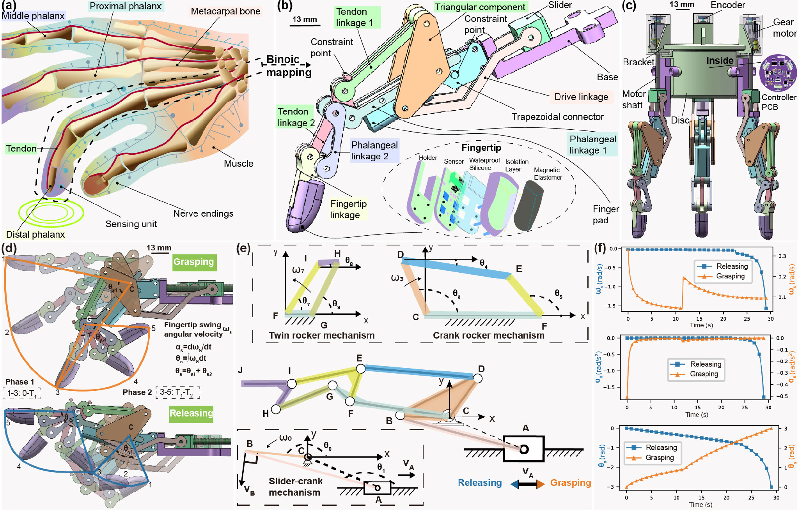
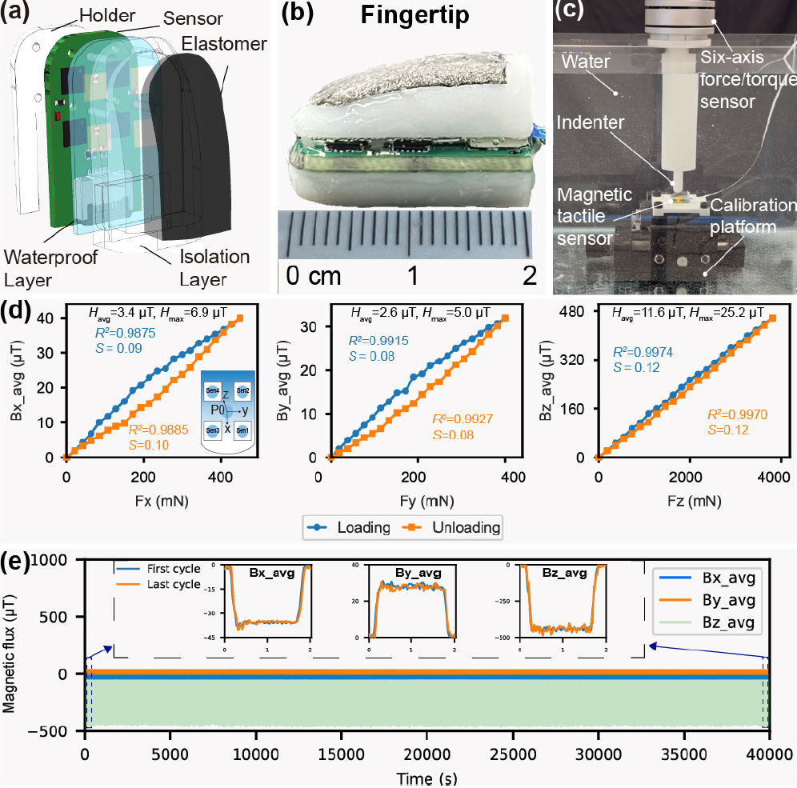
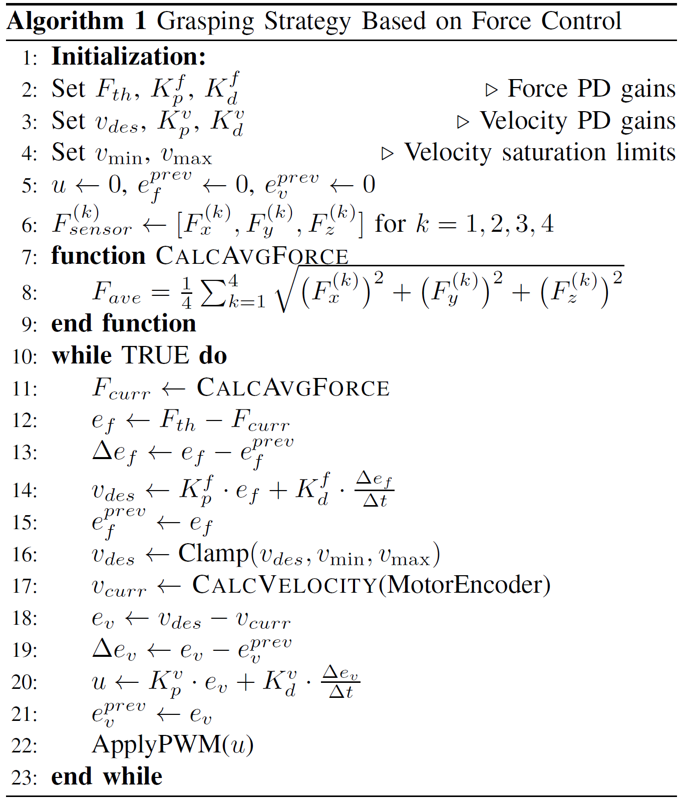
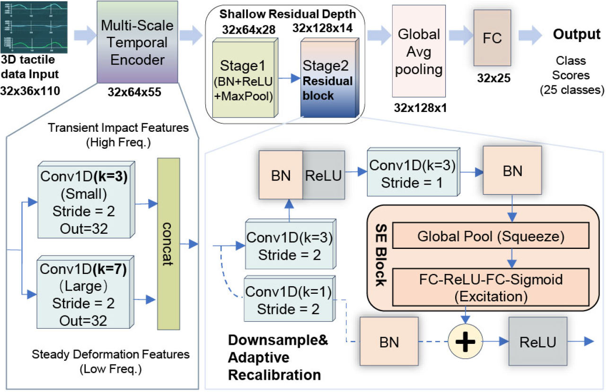
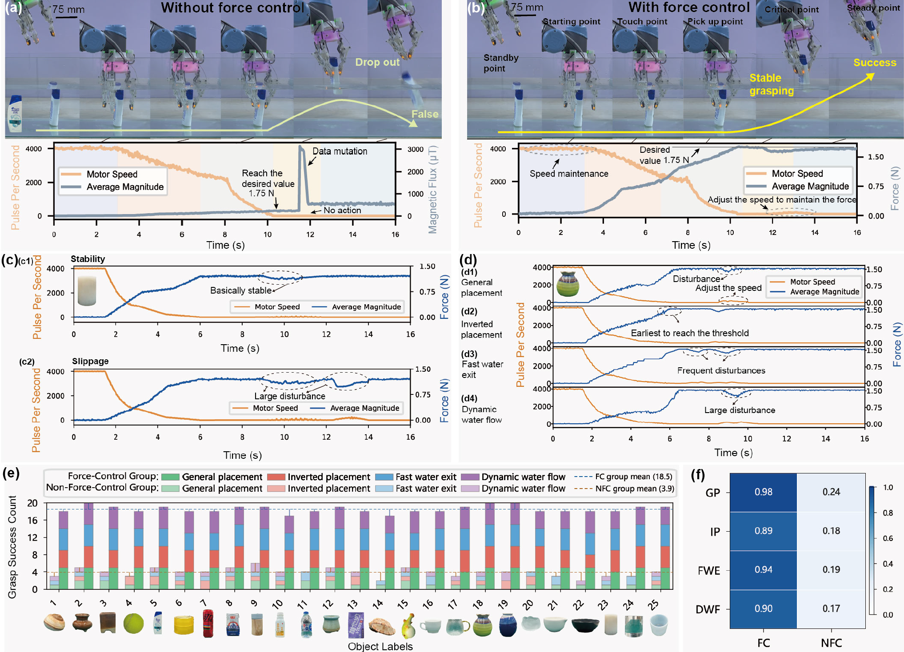
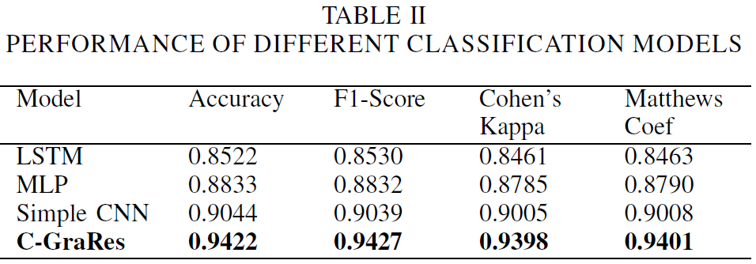
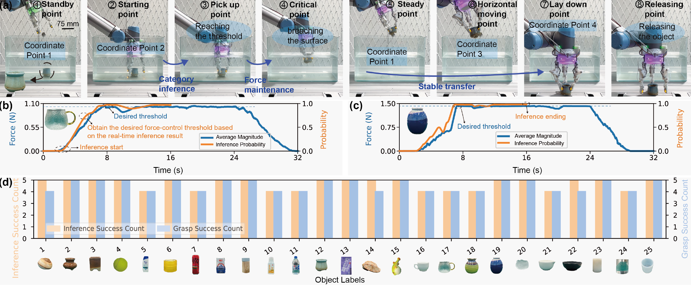
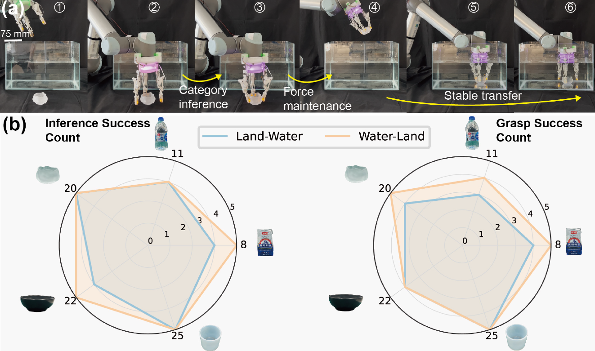

Water-land cross-domain manipulation has recently emerged as a research focus in robotics. However, existing manipulators often struggle to adapt to diverse environments due to medium variations. To address this issue, this paper proposes an intelligent manipulator for water-land cross-domain manipulation. The manipulator consists of three multi-link fingers, high-performance 3D tactile sensors, and a force-controlled grasping strategy driven by edge recognition. First, comparative experiments with and without force control were conducted. The results showed that the average grasping success rate increased significantly from 19.4% ± 4.9% without force control to 92.5% ± 4.1% with force control. Furthermore, a crossdomain grasping dataset containing 25 objects was constructed. The proposed model achieved an offline recognition accuracy of 94.2%, representing an improvement of up to 9% over the baseline models. Extensive experiments and statistical analyses showed that the manipulator achieved an average real-time recognition accuracy of 92.8% at an inference speed of 33 Hz on the edge device, while also attaining an average grasping success rate of 90.4%. Additionally, the system demonstrated good generalization to unseen objects and conditions. Overall, the intelligent manipulator enables stable cross-domain grasping, showing promising potential for such applications.








@article{wang2026crossdomain,
title = {A Bio-Inspired Cross-Domain Robotic Manipulator
with Tactile Sensing and Edge Intelligence},
author = {Wang, Wei and Yiji Luo},
journal = {IEEE/ASME Transactions on Mechatronics},
year = {2026}
}